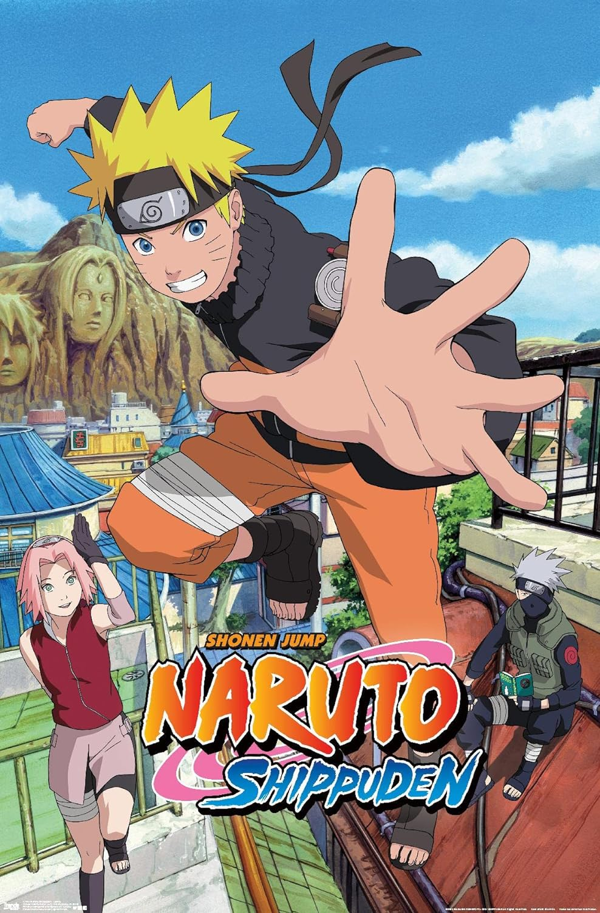
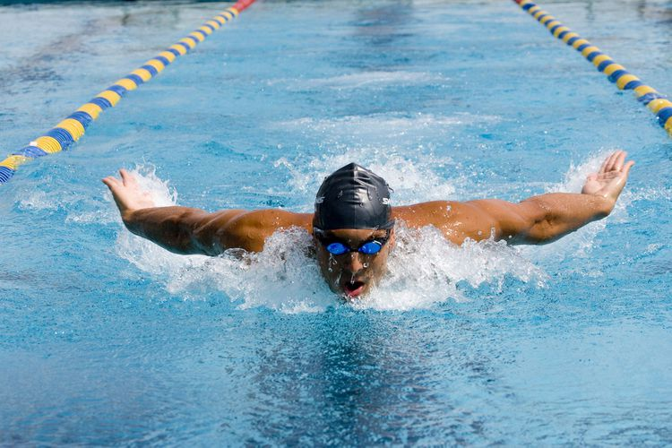

Gallery



My name is Izeal Langford I was born and raised in Baltimore, Maryland I'm an only child & I'm interested in sports and gaming. When I was younger, I was on the swim team. I was a member of the swim team for eight years & played sports in school. My favorite school subject is Math. I'm known to be extremely excitable. I like to play video games such as NBA 2K, WWE & FIFA. My favorite car is a Dodge Charger SRT Hellcat. I also like Anime. I enjoy the storylines and intense battles. My favorite anime is Naruto. I played the violin for five years & the saxophone for two years. My favorite sport is basketball & my favorite player is Steph Curry.
When I first heard about The Hidden Genuis Project, I thought it would be boring & I didn't want to do it. When my grandmother told me about it, it seemed as if I would do more work outside of school. At Interview Day, I met the other geniuses. I didn't think I'd like them because they were a little loud & a bit annoying. Since being in the program, I've gotten to know them & we're all pretty cool. When I discovered The Hidden Genius Project would out give us food, money & a MacBook, I was hyped! The work has been pretty easy since I began understanding it.
My goals are to get good grades in highschool, get into a good college & play sports. When I'm older, I want to get a good job or be a professional athlete. I look forward to getting my own place & getting a car when I'm older as well. I want to have have a solid career that will ensure financial stability so that I can affdord my lifestyle.